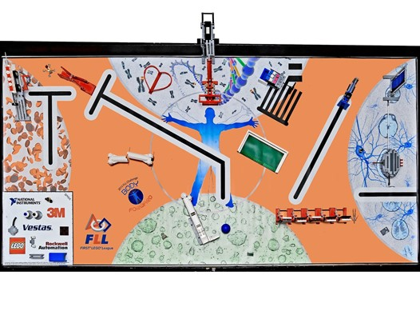
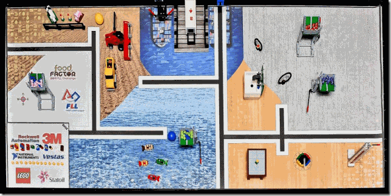
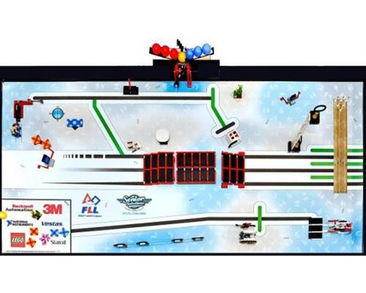
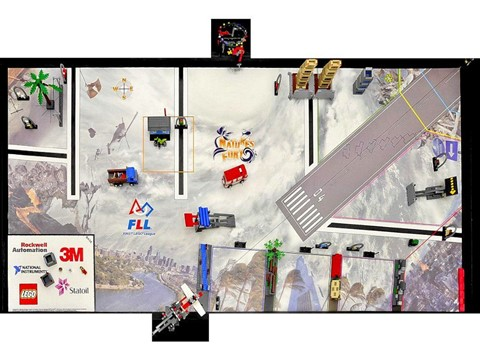
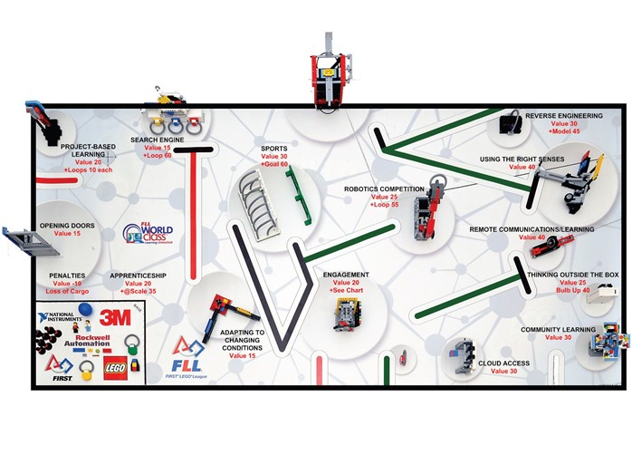
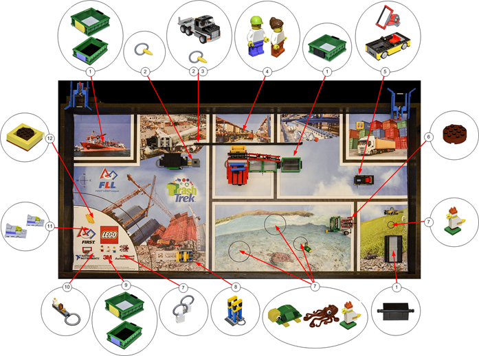
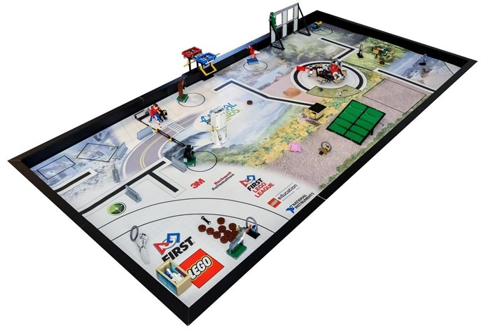
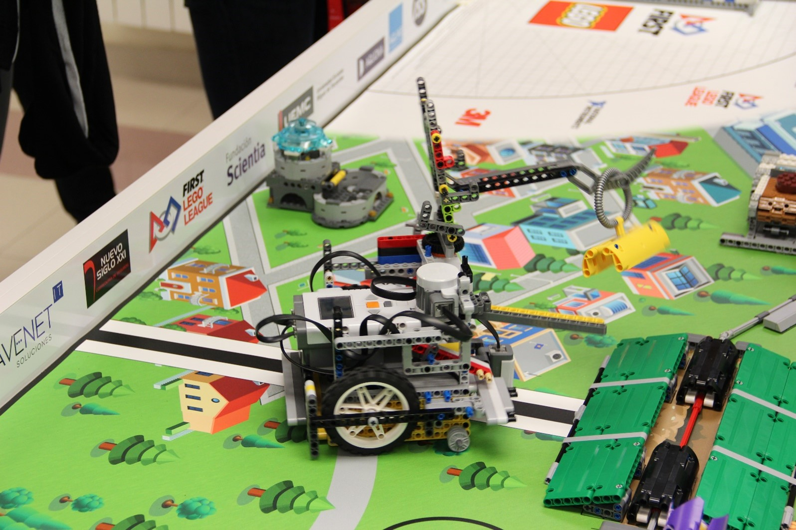
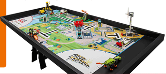
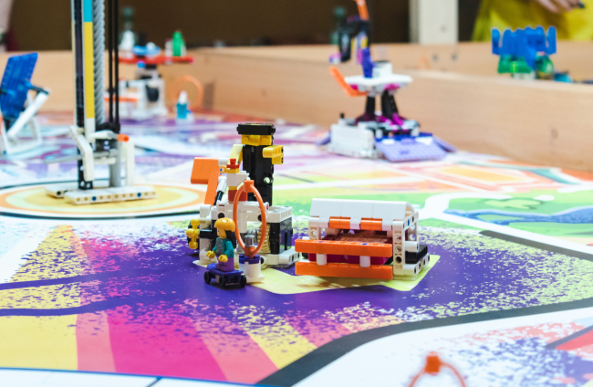

Una vista hacia el pasado...
La FLL lleva acompañádonos desde 2011... ¡Descubra la evolución del equipo aquí y recordemos algunos de nuestros mejores momentos!
★Premio al Mejor Espíritu de Equipo: Reconocimiento al equipo que ha demostrado entusiasmo por la ciencia y la tecnología, así como capacidad de promover esta actitud de una forma divertida y accesible.
Sede de la Fase Regional: Museo de la Ciencia. Valladolid.
★ 1ºPremio Castilla y León Universidad de Burgos ★Premio al Comportamiento del Robot. ★Reconocimiento al equipo que ha conseguido a lo largo del Torneo más puntos en la Competición de Robots.
Sede de la Fase Regional: Universidad de Burgos. Sede Fase Nacional : Recinto Ferial de Navarra. Pamplona
★Premio al mejor Proyecto Científico: Reconocimiento al equipo que ha marcado la diferencia aportando soluciones aplicables al mundo real
Sede de la Fase Regional: Universidad de Burgos.
★Premio UVA al Ganador: Es el mayor reconocimiento otorgado a un equipo FIRST® LEGO® League, destacando por ser un modelo en el respeto a los Valores FLL, y haber conseguido la excelencia e innovación tanto en el Diseño de Robot como en el Proyecto Científico.
(EQUIPO 1) Sede de la Fase Regional: Universidad de Burgos. (EQUIPO 2) Sede de la Fase Regional: Escuela de Ingeniería Informática de la Universidad de Valladolid. Sede Fase Nacional: Barcelona
(EQUIPO 1) Sede de la Fase Regional: Universidad de Burgos. (EQUIPO 2) Sede de la Fase Regional: Escuela de Ingeniería Informática de la Universidad de Valladolid.
Sede de la Fase Regional: Universidad de Burgos.
★Premio al mejor Diseño Mecánico
Sede de la Fase Regional: Universidad de Burgos.
★Premio al Comportamiento del Robot. ★Reconocimiento al equipo que ha conseguido a lo largo del Torneo más puntos en la Competición de Robots.
Sede de la Fase Regional: Universidad Europea Miguel de Cervantes Valladolid.
Sede de la Fase Regional: Universidad de Burgos.
★ 2ºPremio Castilla y León Universidad de Burgos
Sede de la Fase Regional: Universidad de Burgos. Sede Fase Nacional: San Vicente del Raspeig. Alicante.
